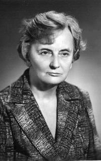

Краткая история вопроса
В те времена, когда вся Европа сходила с ума от психоанализа, один из ведущих психоаналитиков, любимый ученик самого Фрейда и главный редактор психоаналитического журнала, Карл Густав Юнг, воспользовавшись богатейшим опытом глубокого и откровенного общения с людьми, какой давали многочасовые сеансы работы с пациентами, нащупал некую типологию, классификацию людей. Её он изложил в своей книге «Психологические типы». Со смертью автора эта типология была в некоторой мере утрачена, поскольку не была снабжена объективной методикой определения типа. На неё наткнулась литовская исследовательница Аушра Аугустинавичюте, которую интересовал тогда вопрос, какими же законами определяется жизнь в нашей стране. Как экономист по образованию она чётко понимала, что это не экономические законы, и пришла к выводу: это — законы человеческих отношений. Вот почему типологию Юнга она рассматривала со стороны, неожиданной для него самого: а не определяются ли отношения людей их типами? Выяснилось, что очень даже определяются. Сакраментальная формула «не сошлись характерами» именно это и подразумевает. Проводя соционическое консультирование предприятий, мы нередко сталкиваемся с душераздирающими картинами. Конфликтёры — так называется одно из соционических «интертипных» отношений — работают рядом. «Я каждый день плачу»,— говорит женщина. Но она считает, что так и должно быть: она не знает, что можно получать зарплату, не страдая! Как не вспомнить легенду о спартанском мальчике и представления спартанцев о доблести.
Наши представления о доблести включают такие добродетели, как «стаж работы на одном месте». Один советский эмигрант за первый год своего пребывания в США поменял двенадцать мест работы. После шестого увольнения только ответственность за судьбу семьи удержала его от самоубийства. Для человека, привыкшего рассматривать увольнение как экстраординарное событие, такое трудно пережить. Зато потом он нашел своё место и стал миллионером. Опытный соционик мгновенно узнает жертву нашего производственного «гуманизма» — это затравленные, неуверенные в себе, преждевременно постаревшие люди. Они считают себя никуда не годными неумехами просто потому, что попали не в своё окружение.
А семьи? Только опасение кулачной расправы удерживает социоников от того, чтобы встать перед загсом и говорить: у вас дело пойдёт, а у вас — нет. Ведь нет плохих людей, есть плохие отношения.
Именно к такому выводу пришла создатель соционики Аушра Аугустинавичюте. Соционика находится на стыке социологии, психологии и информатики в смысле науки об обработке информации. Происхождение её носит эмпирический характер. Опираясь на работы Юнга, Аушра поначалу просто обобщала наблюдения от глубокого и творческого общения с людьми. Затем появилась некоторая система.
Итак, соционика — это наука, искусство, технология или игра, заключающаяся в умении определять тип личности человека, правильно строить с ним взаимодействие и общение, помочь ему лучше понять себя, оптимально формировать семейные, производственные и досуговые коллективы.
Всякая наука начинается с классификации. Аушра Аугустинавичюте предложила классификацию людей, непосредственно связанную с процессами информационного обмена в обществе. Перед вами не стройное изложение её теории, а практическое руководство для действующего соционика-любителя. Скорей «поваренная книга», чем «учебник биохимии». Её надо не читать, а использовать практически.